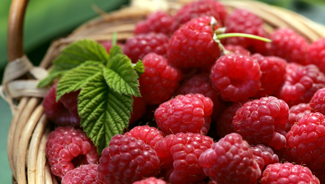

Benefits of Yoga for Cancer Patients 08 OCT 2019Wondering what exercises should be included in the fitness routine of cancer patients? Here are 4 reasons why Yoga should be your choice. |
5 Ways to have More Fun in Your Workout 24 SEP 2019Variety keeps things interesting! To help, here are some of our top suggestions to put the fun back into your exercise routine. Pump up the volume! |
How to Stick to Your Fitness Goals 08 AUG 2019Setting a fitness goal is a simple and effective way motivate yourself into an exercise routine.You've set them goals. Now you gotta stick to them. |
5 Kickass Moves to Spice Up Your Squat Routine 12 JUNE 2019Tired of taking the done-to-death squat routine? Here are 5 insane moves to get you moving! |
How to Get Back into Exercise after Injury 08 NOV 2019No matter what kind of injury you've suffered, whether it's surgery, a sprained ankle or a pulled muscle, here are tips on getting back into your fitness routine. |
Body After Baby 18 SEP 2019Dedication and patience are key to losing postpartum baby weight. Here's some real-world advice on how to get your body back after. |
Tips for new Moms who need a little extra Workout Motivation 26 AUG 2019Nothing like a newborn to make you seize the day. Set Meaningful Goals. Break Goals down into Benchmarks. |
5 Ways to find Your Work-Life Balance 08 JULY 2019These days, work-life balance can seem like an impossible but Yes, we can. Work it out. Remember that a little relaxation goes a long way. |
How to Rekindle Exercise and Weight-Loss Motivation 01 NOV 2019Board of your exercise and weight loss plan? Motivate yourself to focus and work harder with these 5 simple tricks. |
 Miracle Foods that Fight Cancer 08 OCT 2019Meet the superfoods, a checklist of superfoods to keep you cancer-free. that contain properties that kill cancer cells and prevent the growth of tumour. |
Should I Eat as much Fruits as I want 18 SEP 2019Want to know how fruit fits into a healthy diet? It's a valid question! How much fruit should you be eating? Let us help you decide! |
6 Steps for Better Grocery Shopping this Festival Season 28 AUG 2019Planning ahead when shopping for groceries you need, will enable you to make the process smoother and save time. |
Six Steps to Plan Your Next Holiday 18 NOV 2019You've earned a break, so why not treat yourself to a holiday? There are some steps to help you make plans you need. |
6 Tips to Welcome Wellness while Coping with Cancer 08 OCT 2019Have you noticed the tinge of pink T-shirts? That is because October Breast Cancer Awareness Month. |
How to Find the Best Personal Trainer for yourself 15 AUG 2019It's about time to realised the right personal trainer is the answer for your #fitnessgoals. |
How to Trick Your Brain so Your Workout Feels Easier 24 JUNE 2019Listen to music and workout with your BFF #HappySong (only in your head, though). |